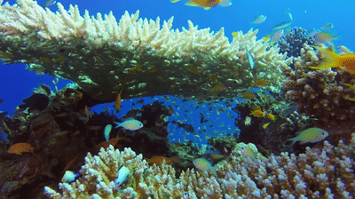
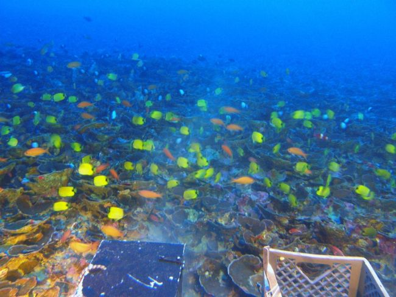

Oceans provide at least a sixth of the animal protein people eat. Living oceans absorb carbon dioxide from the atmosphere and reduce climate change impacts. The diversity and productivity of the world's oceans is a vital interest for humankind. Our security, our economy, our very survival all require healthy oceans.

Polyps, Colonies, and Reefs
Coral polyps are tiny, soft-bodied organisms related to sea anemones and jellyfish. At their base is a hard, protective limestone skeleton called a calicle, which forms the structure of coral reefs. Reefs begin when a polyp attaches itself to a rock on the sea floor, then divides, or buds, into thousands of clones. The polyp calicles connect to one another, creating a colony that acts as a single organism. As colonies grow over hundreds and thousands of years, they join with other colonies and become reefs. Some of the coral reefs on the planet today began growing over 50 million years ago.
Color and Bleaching
Coral polyps are actually translucent animals. Reefs get their wild hues from the billions of colorful zooxanthellae (ZOH-oh-ZAN-thell-ee) algae they host. When stressed by such things as temperature change or pollution, corals will evict their boarders, causing coral bleaching that can kill the colony if the stress is not mitigated.
Threats to Survival
Coral reefs teem with life, covering less than one percent of the ocean floor, but supporting about 25 percent of all marine creatures. However, threats to their existence abound, and scientists estimate that human factors—such as pollution, global warming, and sedimentation—are threatening large swaths of the world's reefs.
From the National Geographic website

Coral Reefs
Coral reefs only occupy 0.1% of the area of the ocean but they support 25% of all marine species on the planet. In fact, the variety of life associated with coral reefs rivals that of the tropical forests of the Amazon or New Guinea.Hundreds of millions of people rely on coral reefs for essential nutrition, livelihoods, protection from life-threatening storms and crucial economic opportunity. About half the world’s shallow water coral reefs are already gone, and without urgent action to address climate change, pollution, overfishing and destructive coastal development, these life-sustaining natural wonders could all but disappear.
'Twilight Zone' Coral Reefs Revealed in Hawaii
A 20-year study of deep coral reefs off of the Hawaiian Islands has found "meadows" of algae nearly 300 feet (90 meters) beneath the surface and the highest rates of species found nowhere else on Earth.Published today (Oct. 4) in the open-access journal PeerJ, the study focuses on a little-understood ecosystem called the mesophotic coral zone. These reef zones span the area between about 100 feet and 500 feet (30 m and 150 m) below the ocean's surface, according to the National Oceanic and Atmospheric Administration (NOAA). "Meso" means "middle" and "photic" means "light," indicating that these deep reefs are in a sort of perpetual twilight zone where sunlight just barely penetrates.

What Is the Coral Triangle?
The Coral Triangle is a vast network of coral reefs that dot the waters surrounding the Philippines, Indonesia, Malaysia, Papua New Guinea, the Solomon Islands and Timor-Leste.Also known as "the Amazon of the ocean," this expansive underwater ecosystem in Southeast Asia is a hotspot for marine biodiversity, hosting 30 percent of the world's coral reefs that span 2.3 million square miles (6 million square kilometers). From humpback whales to humphead wrasses, a wide variety of sea creatures survive and thrive along the reefs in the Coral Triangle.